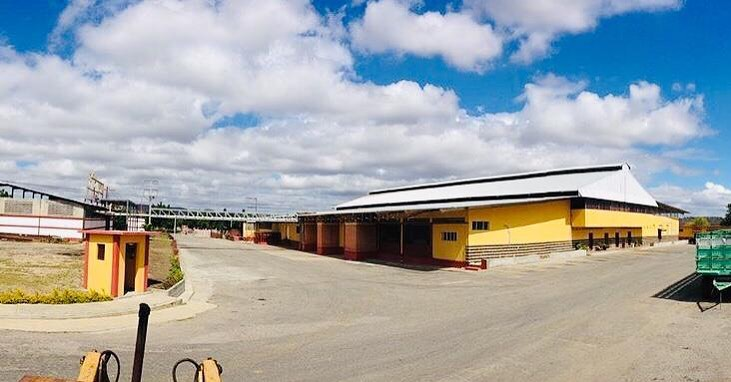
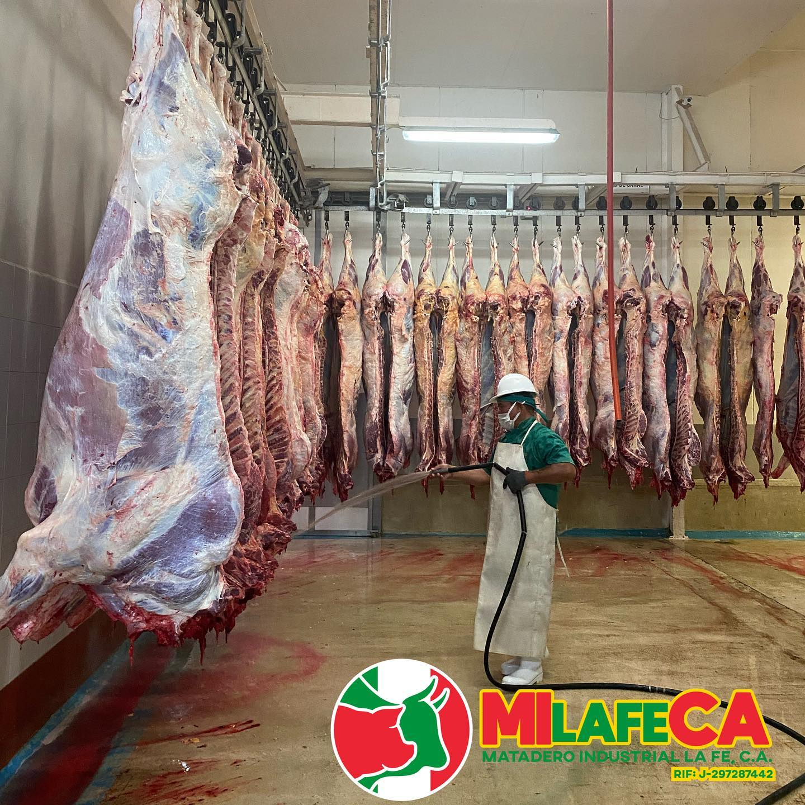

Nuestra misión
Prestar un buen servicio y mantener el control de frío y beneficio mediante los procesos sanitarios correspondientes, desde el ingreso del animal a los corrales hasta su procesamiento.

Matadero Industrial La Fe C.A.
Conócenos
Trabajamos para ofrecer un servicio de beneficio de ganado responsable, con atención a la higiene y al cuidado de cada etapa del proceso.

Prestar un buen servicio y mantener el control de frío y beneficio mediante los procesos sanitarios correspondientes, desde el ingreso del animal a los corrales hasta su procesamiento.

El Matadero Industrial La Fe C.A. presta servicios de beneficio de ganado bovino y porcino. Desde sus inicios, este ha sido el campo de trabajo de la empresa, con un enfoque en la higiene y la calidad.
Venezuela Estado Lara al Oeste de Barquisimeto Avenida Florencio Jimenez via Quibor KM 22 "El Rodeo"